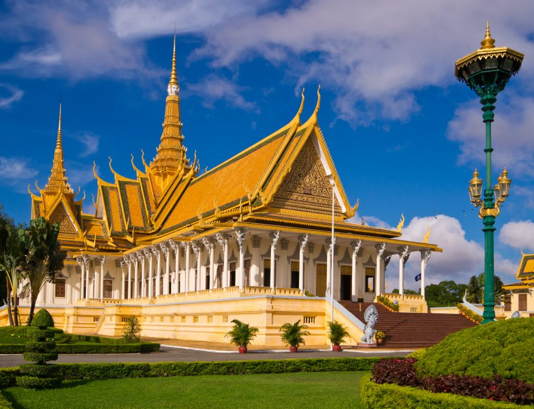
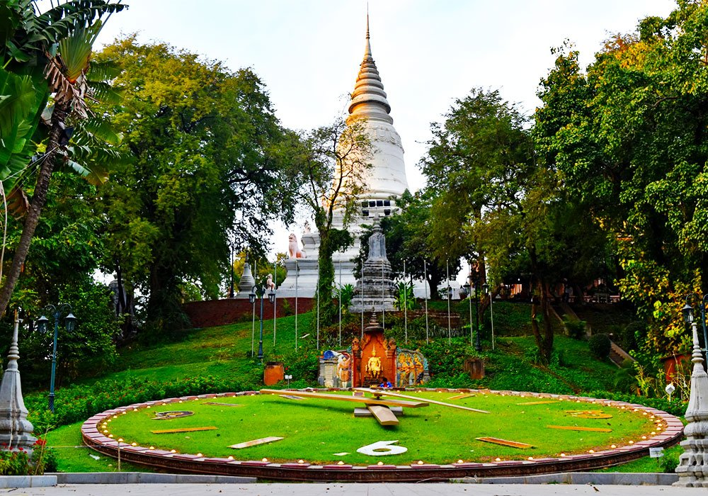

Welcome
To
Cambodia
Kingdom of Wonder
Angkor Wat is a temple complex in Cambodia and the
largest religious monument in the world...
Hotel
Phnom Penh has hotel scene is a fascinating blend of "Old World" French colonial charm and a rapidly rising modern skyline. As the capital of Cambodia, the city serves as the country’s economic and cultural heartbeat, and its hospitality reflects that diversity. Phnom Penh’s hotel scene is a fascinating blend of "Old World" French colonial charm and a rapidly rising modern skyline. As the capital of Cambodia, the city serves as the country’s economic and cultural heartbeat, and its hospitality reflects that diversity. In the shadows of the iconic Independence Monument, you’ll find a landscape where gilded pagodas and mid-century "New Khmer Architecture" sit alongside sleek, glass-and-steel skyscrapers.
Colonial Grandeur
Phnom Penh’s hotel scene is a fascinating blend of "Old World" French colonial charm and a rapidly rising modern skyline. As the capital of Cambodia, the city serves as the country’s economic and cultural heartbeat, and its hospitality reflects that diversity. Visitors can choose between nostalgic heritage enclaves, defined by restored villas and lush courtyards, or the urban vanguard of sleek skyscrapers featuring rooftop infinity pools and panoramic river views.
See More
Royal Palace
Built in 1866 under King Norodom I, the Royal Palace in Phnom Penh was established when the capital moved from Oudong. Its architecture is a striking blend of traditional Khmer motifs and French colonial influence, though many of the original wooden structures were rebuilt with stone and tile during the early 20th century. While the palace remained largely intact during the Khmer Rouge era, it fell into disuse until the monarchy was restored in 1993. Today, it serves as the King’s official residence and a primary venue for court ceremony and diplomatic reception.

The Royal Palace in Phnom Penh is a stunning 174,000-square-meter complex that serves as the official residence of the King of Cambodia. Built in 1866, it features quintessential Khmer architecture with golden tiered roofs and intricate carvings overlooking the Mekong River. The grounds are divided into several compounds, most notably the Throne Hall, used for coronations, and the Silver Pagoda, which houses national treasures like a solid gold Buddha and a floor made of 5,000 silver tiles. Visitors must follow a strict dress code covering shoulders and knees, and while the lush gardens are perfect for photography, indoor filming is prohibited to preserve the sanctity of the royal site.
See MoreWat Phnom
Wat Phnom’s history is a captivating blend of folklore and royal legacy, beginning in 1372 with a wealthy widow named Daun Penh. According to legend, she discovered a floating koki tree in the Mekong River containing four bronze Buddhas and a stone statue of Vishnu. Regarding this as a divine omen, she orchestrated the construction of an artificial 27-meter hill and a small shrine to house the icons, a site that eventually gave the city its name, "Phnom Penh" (the hill of Penh). The location took on greater political significance in 1434 when King Ponhea Yat fled the fading Khmer capital of Angkor and established his new seat of power here. He expanded the hill and built the monumental stupa that still stands today, which serves as the final resting place for his ashes and remains a focal point of the complex.
Wat Phnom is a historic Buddhist temple and the tallest religious structure in Phnom Penh, standing atop the city's only hill. According to local legend, it was established in 1372 by a wealthy widow named Lady Penh, who found four Buddha statues in a floating Koki tree on the river and built a small hill to house them. The temple complex features a large white stupa that contains the remains of King Ponhea Yat, a massive working floral clock on the manicured lawn, and a shrine dedicated to Lady Penh where locals frequently pray for good luck. While the area offers peaceful shaded walkways, visitors should be mindful of the resident monkey population and follow the standard respectful dress code for Cambodian religious sites.
See More
About Us
Phnom Penh, the vibrant "Pearl of Asia," is a city defined by its remarkable resilience and constant evolution. Situated at the majestic confluence of the Mekong and Tonle Sap rivers, the Cambodian capital offers a captivating blend of golden-spired traditional architecture and a rapidly rising modern skyline. From its legendary founding by Grandmother Penh to its period as a refined French colonial hub, the city carries a deep and complex history that is visible in every corner—from the wide, tree-lined boulevards to the bustling, narrow alleys of its traditional markets. Today, Phnom Penh is the heartbeat of the Kingdom, where ancient Khmer hospitality meets a thriving contemporary scene of world-class dining, rooftop bars, and a soulful riverside culture. It is a city that doesn't just invite you to sightsee, but encourages you to experience the enduring spirit of the Cambodian people.